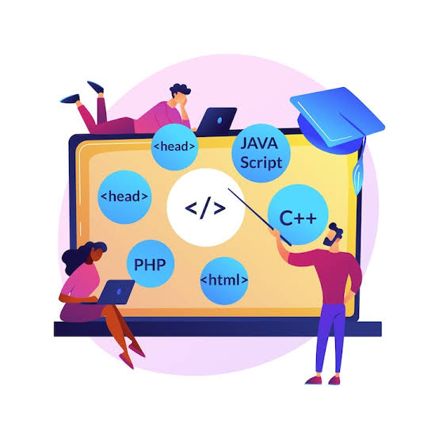
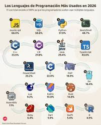
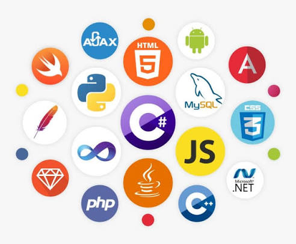

La programación es el proceso de crear instrucciones que le indican a una computadora, celular u otro dispositivo qué acciones debe realizar. Se utiliza para desarrollar aplicaciones, páginas web, videojuegos, programas y sistemas tecnológicos.
1
La programación permite resolver problemas, automatizar tareas y crear nuevas herramientas que facilitan la vida cotidiana.
Los lenguajes de programación son sistemas de comunicación que permiten dar instrucciones a las computadoras mediante códigos y reglas específicas. Cada lenguaje tiene características y funciones diferentes, dependiendo de lo que se quiera desarrollar.
1. Python: Es un lenguaje sencillo de aprender. Se utiliza para inteligencia artificial, análisis de datos, automatización y desarrollo de programas.
2. Java: Se utiliza para desarrollar aplicaciones, sistemas empresariales y programas para diferentes dispositivos.
3. JavaScript: Es uno de los lenguajes más utilizados para crear páginas web interactivas y aplicaciones web.
4. HTML: Es un lenguaje de marcado que sirve para organizar el contenido de las páginas web, como textos, imágenes y enlaces.
5. CSS: Se utiliza para diseñar páginas web, cambiar colores, tamaños, estilos y organizar los elementos visuales.
6. C++: Es un lenguaje utilizado para desarrollar videojuegos, programas y sistemas que necesitan un alto rendimiento.
7. PHP: Se utiliza principalmente para desarrollar páginas web dinámicas y trabajar con bases de datos.
8. Swift: Es un lenguaje creado para desarrollar aplicaciones para dispositivos Apple, como iPhone y iPad.
9. Kotlin: Se utiliza principalmente para desarrollar aplicaciones móviles para Android.
10. C#: Es un lenguaje utilizado para crear videojuegos, aplicaciones y programas informáticos.

Crear aplicaciones para celulares.
Diseñar páginas web.
Desarrollar videojuegos.
Crear programas para computadoras.
Desarrollar inteligencia artificial.
Automatizar actividades.
Administrar información y bases de datos.

La programación es importante porque permite desarrollar nuevas tecnologías, mejorar procesos y encontrar soluciones a diferentes problemas.
Además, aprender lenguajes de programación ayuda a desarrollar el pensamiento lógico, la creatividad y la capacidad de resolver problemas.

| volver a inicio | siguiente |